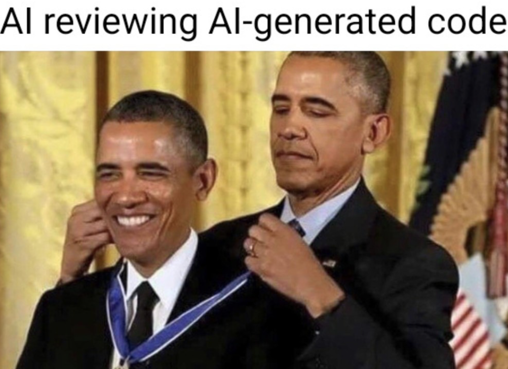

Apply and deploy what you reviewed, check only what changed, test deployments with a comment.
Danny Molnar & Miklos Vincze · AppOps, part of IDE (Infrastructure and Development Enablement)
Scope
Who this is for
Infrastructure repos only. Nothing changes for a repo until it opts in.
Affected
ts-* repos: ts-general, ts-security, ts-ai and more
/infra folders in service repos
AWS infrastructure through Terraspace and GitHub Actions
Not affected
Application repos
Their own CI/CD and release flow
Opt-inOne PR per repo. Revert it to go back.
Before
Reviewing and deploying were separate work
Every step repeated work the PR had already done.
The normal path
PR: plan every stack→Review→Merge→Plan again→Approve→Apply
Want to try it before merging?
Leave the PR→Actions tab→Manual Command→Pick branch, environments, stacks
The plan you review is not the plan you apply, and a one-stack change still plans every stack.
After
Several improvements shipped together
What changed
Plan only what changed. The PR plan covers the stacks it touches. Docs-only PRs plan nothing.
Apply what you reviewed. The reviewed plan is applied on merge, through the usual approvals. No second plan.
Exclude-stacks workflow. Add or remove stacks in an environment's exclude list through a PR. Repos that did not have it get it with the opt-in.
Auto-format. The bot pushes the tofu fmt commit to your PR branch; git pull before your next push.
Test by comment./deploy development tries a change from the PR. Asks for an approval too. Not the normal way to ship.
What you get
Faster. Plan and apply jobs shorter.
Less runner time. Only changed stacks are planned; docs-only PRs plan nothing.
Safer. The plan you reviewed is the plan applied; a plan that went stale is refused.
Less manual work. Formatting and exclude-list changes are handled for you.
In practice 1 of 3
A PR plans what it changes
The plan comment lists the changed stacks. Its footer explains how to test before merging, and that merging is the standard way.
Plan comment, footer expanded: testing before merge is for exceptions
Docs-only PR: nothing to plan, about 1.5 minutes
Changes to shared files (modules, base config, Tofu provider config changes) still plan every stack.
In practice 2 of 3
Try it from the PR
Test a change in development without leaving the PR. Shipping still goes through merge.
Comment and bot reply
Dependent stacks: the bot names the waiting ones
Use sparinglyFor testing in development and for emergencies. Deploying before merge makes the environment differ from main, so keep it the exception.
In practice 3 of 3
Merge applies the plan you reviewed
This is the normal path. You review, merge, and the merge run applies the plan from the PR. It does not plan again.
After the merge: the Up run waits for the environment approval
It plans again only when it must
Main changed something the plan depends on
The plan expired
The PR changed .github/
You re-run the workflow
Then you approve the new plan.
When it goes wrong, on purpose
"Saved plan is stale"
It happens when the stack changed after the PR plan was made, for example after a /deploy before merging. OpenTofu refuses the old plan, and the fix is one click.
First attempt: the Up job fails
Re-run all jobs: planned again, nothing left to apply
UseRe-run all jobs, not Re-run failed jobs (that applies the same stale plan again). Seen for real on ts-ai after a manual change in staging.
Good to know
What teams will notice
A short, honest list: what you will see, why, and what to do.
An extra approval when main moved. If someone changed the same stacks after your review, the saved plan is no longer safe. It is planned again and you approve the new plan.
A stale plan after /deploy. Deploying from the branch changes the environment, so the saved plan is outdated at merge. The run fails once: click Re-run all jobs and it finishes green.
Dependent stacks need a second /deploy. Stacks that read each other's outputs deploy in layers. The bot names the waiting ones; run /deploy again once the first layer is applied.
The infra:no_changes label is still fine to use. It makes no difference now: PRs that do not touch infrastructure plan nothing on their own.
Better notifications are on their way. The old Slack message after a deploy is not in the new workflows yet; an improved notification system is under way and will follow.
Implementation and testing
The edge cases we found
Deciding whether a reviewed plan is still safe to apply has many corners. We listed them and tested each one for real.
~90
end-to-end scenarios across all test rounds
Plus 146 unit tests, and 47 script tests against a fake Terraspace, in CI.
An earlier run, on the first version of the code, found 5 issues. All were fixed before the final run.
A stack reads another stack's outputsApplying the first changes its outputs, so OpenTofu refuses the second's saved plan. It is re-planned and applied in the same run.
Merged while the PR plan still runsThe merge run waits for the plan instead of failing. GitHub also lists new runs with a delay.
Someone changed the same stack firstYour reviewed plan is outdated, so it is planned again from main. A change to another stack is not.
Another PR adds your stack to stagingYour PR is checked again on merge. Otherwise the change would never reach staging.
The saved plan is gonePlan files expire after a while. If they are missing at merge, it plans again instead of failing.
Implementation and testing

Verifying a change too big to review
A change this size could hardly be reviewed meaningfully line by line.
The change
+2,781core: scoped plans, reuse on merge+285dependent stacks+2,589unit tests and script tests
5,655 new lines in 33 files, stacked in three PRs.
The agent (Claude Code) ran the test catalogue in the sandbox repo: opened the PRs, read every plan, approved, merged, and wrote a report linking every run.
The guardrails
A written test plan. Exact commits, the expected result of each test, and how to read the evidence.
Sandbox only. The test repo, development and staging, stacks that create nothing real. No deletes, force-pushes or destroys.
Read before approving. Approve only the exact plan that will be applied; the approval comment quotes the run, stacks and change counts.
Hooks block risky commands. Approvals and merges the hook cannot verify, and any direct apply.
People decide the irreversible. Deleting an artifact, changing an expected result.
Implementation and testing
The AI verification in numbers
The final run on 16 October, against the code that was merged.
53 / 53
tests passed
every test that applies to the final code
66
test PRs
60 merged, 6 closed by design
144
pipeline runs
74 PR plans, 70 deployments
78
approval decisions
each after reading the plan; 1 rejection, on purpose
5.5 h
start to last merge
13:05 to 18:35 UTC, one session
8
findings
1 low-severity code issue, 0 unsafe applies
ContextAn earlier run had already found and fixed 5 issues. 3 decisions by a person, 5 commands blocked by the guardrail hooks.
Rollout
Rolling out, and where to follow it
Repos opt in gradually, in small batches.
Where we are
PE org: done, all repos run on the new workflows
ES org: underway, the next batch is being merged now
New repos from the template start on the new workflows
Next
The remaining ES repos follow in small batches, one PR per repo
Should I deploy every change with /deploy? No. Merge and approve is the default. /deploy is for testing in development and for emergencies.
Does a PR plan stacks that depend on a changed stack? No, only the changed ones; a change to shared files plans everything.
Is anything missing compared to the old workflows? Not yet in v2: the policy check and the no-refresh plan mode. Slack notifications: an improved system is under way and will follow.
Can I opt my repo in? AppOps opens the PR; ask in the channel.
Do I still have to approve every deployment? Yes. After a merge the environment approval before an apply is unchanged, and /deploy asks for one too. Automatic deployments are the next thing on our radar.
What about PRs open when the repo switches? They are planned again on merge, with a new approval.
← → navigate · click a screenshot to zoom · N notes · T timer · F fullscreen · O skip optional · ? hide hint